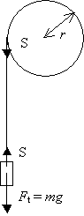
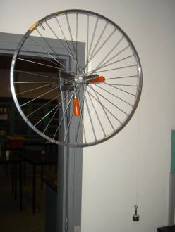
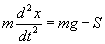
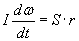
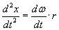
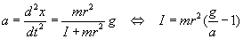

 |
 |
At bestemme inertimomentet for et cykelhjul.
Et cykelhjul spændes fast på en dørkarm. En tynd sytråd bindes omkring hjulet og et lod hænget i sytråden. En »Motion detector« tilsluttet LabPro anbringes på gulvet under loddet. En beskyttende trådkurv anbringes over detektoren.
Newtons 2. lov anvendt på loddet:
m·a = mg – S, der også kan skrives som

(1),
hvor mg er tyngdekraften og S er snorkraften.
Hjulet er påvirket af et kraftmoment. Her gælder at Inertimomentet om aksen gange vinkelaccelerationen og lig med summen af de ydre kraftmomenter. (Sammenlign med Newtons 2. lov). Dvs.

(2)
Idet hastigheden for loddet = hastigheden af et punkt på hjulets periferi er givet ved
v = w·r,
som medfører 
Ved kombination af ligning (1) og (2) udledes herefter

Udfør målinger med forskellige belastninger: 50g, 100g,… og udregn inertimomentet.
Vurder nøjagtigheden i forsøget.